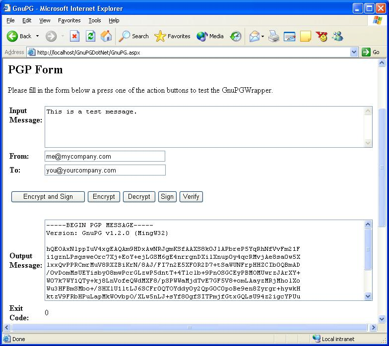

Author: Emmanuel KARTMANN
Date: November 1st, 2002

Environment: .NET, ASP.NET, C#
Keywords: GnuPG, PGP, Cryptography, Thread, Process, Command Line Program
This article presents GnuPGWrapper v1.0, a wrapper class for GnuPG.
GnuPG stands for GNU Privacy Guard and is GNU's tool for secure communication and data storage. It can be used to encrypt data and to create digital signatures. It includes an advanced key management facility and is compliant with the proposed OpenPGP Internet standard as described in RFC 2440. As such, GnuPG is a complete and free replacement for PGP (Pretty Good Privacy).
This article provides a C# wrapper class (GnuPGWrapper) that
will enable use of OpenPGP Internet encryption standard within a .NET
world. It is shipped with a demo ASP.NET Web Form (GnuPG.aspx) which calls
the wrapper class.
GnuPG ships as a command line program (gpg.exe) acting as a filter
(reads from standard input
and writes into standard output). Although suitable for scripting on UNIX
systems (where calling a command line program
from "sh" or "bash" is easy), it's pretty hard to integrate this in a
production .NET environment.
The GnuPG Wrapper executes the command line program (gpg.exe) in a
different process, redirects standard input (stdin), standard
output (stdout) and standard error (stderr) streams,
and monitors the streams to fetch the results of the encryption/signing
operation.
The GnuPG Wrapper:
Please note that you must have INSTALLED GnuPG AND generated/imported the appropriate keys before using this class. Refer to the GnuPG manual to do this...
The next sections show sample source code for the most command operation (SignAndEncrypt, Decrypt, Verify).
// Reference My GnuPG wrapping class
using Emmanuel.Cryptography.GnuPG;
// Create GnuPG wrapping class
GnuPGWrapper gpg = new GnuPGWrapper();
// Set command
gpg.command = Commands.SignAndEncrypt;
// Set some parameters from on Web.Config file
gpg.homedirectory = Server.MapPath(ConfigurationSettings.AppSettings["homedirectory"]);
gpg.passphrase = ConfigurationSettings.AppSettings["passphrase"];
// Set other parameters from Web Controls
gpg.originator = FromTextBox.Text;
gpg.recipient = ToTextBox.Text;
// Declare input/output variables (input is also read from a Web control)
string inputText = MessageTextBox.Text;
string outputText = "";
// Execute GnuPG
gpg.ExecuteCommand(inputText, out outputText);
// Display output text
OutputTextBox.Text = outputText;
OutputTextBox.Visible = true;
ErrorMessage.Visible = false;
ExitCodeLabel.Text = gpg.exitcode.ToString();
using Emmanuel.Cryptography.GnuPG;
GnuPGWrapper gpg = new GnuPGWrapper();
gpg.homedirectory = "C:\Inetpub\wwwroot\GnuPGDotNet\GnuPG"
gpg.passphrase = "My passphrase is so cool I can't remember it"
gpg.command = Commands.Decrypt;
// Execute GnuPG
string outputText = "";
gpg.ExecuteCommand("This is a test message.", out outputText);
// Display output text
[...]
using Emmanuel.Cryptography.GnuPG;
GnuPGWrapper gpg = new GnuPGWrapper();
gpg.homedirectory = "C:\Inetpub\wwwroot\GnuPGDotNet\GnuPG"
gpg.passphrase = "My passphrase is so cool I can't remember it"
gpg.originator = "me@mycompany.com";
gpg.command = Commands.Verify;
// Execute GnuPG
string outputText = "";
gpg.ExecuteCommand("This is a test message.", out outputText);
// Display output text
[...]
Error handling is done via a specific Exception class; method "ExecuteCommand" raises this exception whenever an error occurs. You calling application can handle this exception as follows:
using Emmanuel.Cryptography.GnuPG;
try
{
GnuPGWrapper gpg = new GnuPGWrapper();
gpg.homedirectory = "C:\Inetpub\wwwroot\GnuPGDotNet\GnuPG"
gpg.passphrase = "My passphrase is so cool I can't remember it"
gpg.originator = "me@mycompany.com";
gpg.recipient = "you@yourcompany.com";
gpg.command = Commands.SignAndEncrypt;
// Execute GnuPG
string outputText = "";
gpg.ExecuteCommand("This is a test message.", out outputText);
// Display output text
[...]
}
catch (GnuPGException gpge)
{
// Display error message
ErrorMessage.Text = gpge.Message; // Contains a clear text error message, either from the wrapper or from gpg.exe itself
}
This code is deployed in a real-life e-commerce web site that uses GnuPG to communicate with some of its partners securely (http://www.gourmeo.com).
This class has been developed and tested with GnuPG v1.2.0 (MingW32).
You can check the command line manual page for gpg.exe
For more about GNU, please refer to http://www.gnu.org
For more about GnuPG, please refer to http://www.gnupg.org
For more
about OpenPGP (RFC 2440), please refer to
http://www.gnupg.org/rfc2440.html
For more about PGP, please refer to http://www.pgpi.org